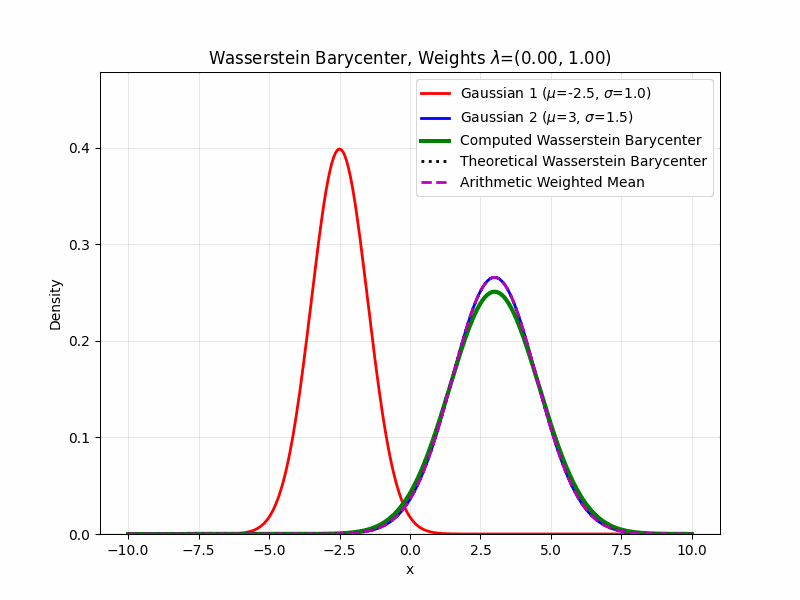
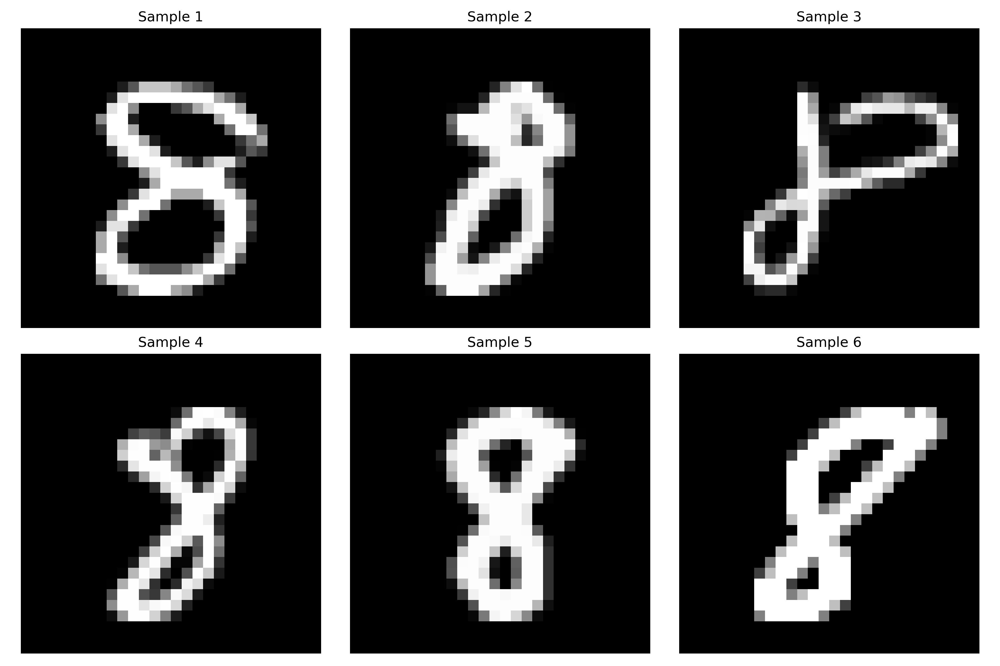
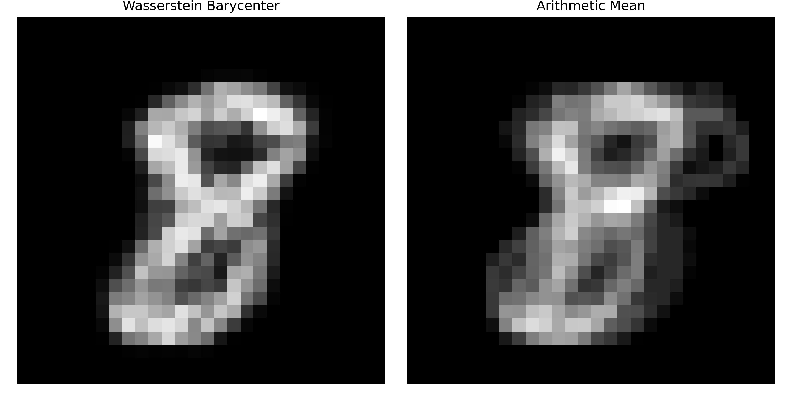
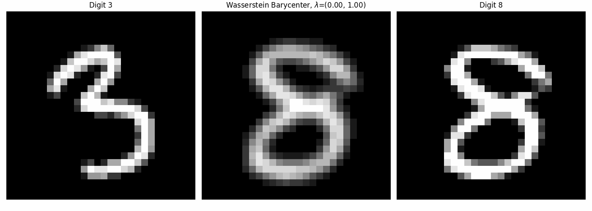

Wasserstein Barycenters and Applications in Image Processing
In optimal transport, a Wasserstein barycenter (Santambrogio 2015) is a probability measure that represents a weighted average between several probability measures with regard to the Wasserstein distance. This generalizes the notions of physical barycenters and geometric centroids to the domain of measures.
Wasserstein Barycenters
Motivation
Barycenters in physics and geometry are points that represent a notion of a mean of a number of objects. In astronomy, the barycenter is the center of mass of two or more objects that orbit each other, and in geometry, a centroid is the arithmetic mean of all the points in an object. Given countably many points \(\{x_i\}_{i \in I} \subseteq \mathbb{R}^n\) and nonnegative weights \(\{\lambda_i\}_{i\in I}\), the weighted \(L^2\) barycenter of the points is the unique point \(y \in \mathbb{R}^n\) such that:
\[y = \arg \min_{y \in \mathbb{R}^n} \sum_{i \in I} \lambda_i \|y - x_i\|^2\]
Wasserstein barycenters capture this concept for probability measures by replacing the Euclidean distance with the Wasserstein distance of two probability measures, \(W_2(\mu, \nu)\).
Definition
Let \(\Omega\) be a domain and \(\mathcal{P}(\Omega)\) be the set of probability measures on \(\Omega\). Given a collection of probability measures \(\{\mu_i \}_{i \in I}\) and nonnegative weights \(\{\lambda_i\}_{i \in I}\), we define the Wasserstein barycenter of \(\{\mu_i\}_{i \in I}\) as any probability measure \(\mu\) that minimizes the functional:
\[\sum_{i \in I} \lambda_i W_2( \mu_i, \mu)^2\]
over the space \(\mu \in \mathcal{P}(\Omega)\). Here \(W_2\) denotes the \(2\)-Wasserstein distance, which may be replaced with the \(p\)-Wasserstein distance, \(W_p\), though this is less common.
This minimization problem was originally introduced by Agueh and Carlier (Agueh and Carlier 2011), who also proposed an alternative formulation of the problem above when there are finitely many measures \(\{\mu_i\}_{i = 1}^n\). Instead of considering the minimum over all probability measures \(\mu \in \mathcal{P}(\Omega)\), one can equivalently consider the optimization problem over all multi-marginal transport plans \(\gamma \in \mathcal{P}(\Omega^{n+1})\) whose push forwards satisfy \((\pi_i)_{\#} \gamma = \mu_i\) for \(i \in \{1, \ldots, n\}\) and \((\pi_0)_{\#} \gamma = \mu\) for some unspecified probability measure \(\mu\). The problem then tries to minimize:
\[\int \left ( \sum_{i = 1}^N \lambda_i \| x_i - x_0 \|^2 \right ) d \gamma\]
Existence and Uniqueness
We consider the Wasserstein barycenter minimization problem for finitely many given measures \(\{\mu_i\}_{i=1}^n \subseteq \mathcal{P}_2(\mathbb{R}^d)\) and nonnegative weights \(\lambda_i \geq 0\):
\[\inf_{\mu \in \mathcal{P}_2(\mathbb{R}^d)} \sum_{i=1}^n \lambda_i W_2(\mu_i, \mu)\]
Agueh and Carlier (Agueh and Carlier 2011) prove that, if at least one \(\mu_i\) is absolutely continuous with Lebesgue measure, the Wasserstein barycenter \(\mu\) exists and is unique, and is given by \(\mu = \nabla \phi_i \# \mu_i\) where \(\phi_i\) is a convex potential.
Furthermore, if all \(\mu_i\) are absolutely continuous with Lebesgue measure, then the following are equivalent:
\(\mu\) is the Wasserstein barycenter
\(\mu = \nabla \phi_i \# \mu_i\) for all \(i\), where \(\phi_i\) is a convex potential
There exist convex potentials \(\psi_i\) such that \(\nabla \psi_i\) is the Brenier’s Theorem transport map from \(\mu_i \rightarrow \mu\) and a constant \(C\) such that, for all \(y \in \mathbb{R}^d\) with equality \(\mu\)-almost everywhere:
\[\sum_{i=1}^n \lambda_i \psi_i^*(y) \leq C + \frac{\|y\|^2}{2}\]
Examples
One Dimensional Measures
Let \(\{\mu_i\}_{i=1}^n \subseteq \mathcal{P}_2(\mathbb{R})\) be nonatomic probability measures and \(\{\lambda_i\}_{i=1}^n\) weights such that \(\lambda_i > 0\) for all \(i\) and \(\sum_{i=1}^n \lambda_i = 1\).
Then the Wasserstein barycenter \(\mu\) is given explicitly by:
\[\mu = \left( \sum_{i=1}^n \lambda_i T_i \right) \# \mu_1\] where \(T_i\) is the transport map \(\mu_1 \rightarrow \mu_i\) from Bernier’s Theorem. (Agueh and Carlier 2011)
Computational Solution
If all of the considered measures \(\{\mu_i\}_{i=1}^n\) are known to be finitely supported, computing the Wasserstein barycenter reduces to a problem in linear programming (Peyré and Cuturi 2019). This is often the case for measures of interest in computational problems. The most common approach to computing Wasserstein barycenters is through Sinkhorn’s algorithm with entropic regularization, illustrated below.

K-Means Connection
When the family of measures \(\{\mu_i\}_{i \in I}\) consists of exactly one finitely supported measure \(\mu_1\) and we restrict the minimization problem solution space to exclusively \(\mu\) which are finitely supported probability measures whose supports have at most \(k\) points, the problem of finding the Wasserstein barycenter is equivalent to the \(k\)-means clustering problem.
Applications
Barycenters in Image Processing
Barycenters have several applications in image processing. A core example (Claici, Chien, and Solomon 2018) arises in handwriting recognition. It is often useful to have a reference image of an expected letter, but simply taking the pixel-by-pixel Euclidean average fails to capture the geometric information of the letter. If the images are treated as probability distributions with pixel values as magnitudes, the Wasserstein barycenter provides a much more meaningful expected letter. We illustrate this application through the classical MNIST dataset.


Another core image processing application is image interpolation. Wasserstein barycenters can be used to interpolate between two or more images in a meaningful way (Santambrogio 2015). For example, suppose we are given two images from the MNIST dataset. While taking an average of pixel values would result in an overlapped figure of the two digits in grayscale, there would be very little meaningful semantic information to extract from the image. By computing the Wasserstein barycenter for pairs of weights \(\lambda_1 + \lambda_2 = 1\) and changing these weights in the interval \((0,1)\), we can interpolate smoothly between these two images and watch the transport action, as below. Similar ideas can be applied to enhance the contrast of an image.

Model Ensembling
Model ensembling is a popular machine learning technique for improving accuracy in difficult learning tasks. Typically this involves training several sub-models on the same task, and then averaging their predictions in a semantically meaningful way to yield one true prediction model, which often has higher accuracy than any singular sub-model.
The Wasserstein barycenter provides one approach to accomplishing this core task (Dognin et al. 2019) while maintaining a high level of semantic meaning. Sub-models are interpreted as defining a distribution over some label space, rather than a singular output, and the ensemble model defines the Wasserstein barycenter of these distributions over label space. This allows for interesting analysis of the entire ensemble distribution, potentially useful in hard classification tasks.
Generalizations
Allowing negative barycenter weights yields a generalized minimization problem:
\[\inf_{\mu \in \mathcal{P}_2(X)} \sum_{i=1}^n \lambda_i W_2(\mu_i, \mu)^2 \] where the constraint on \(\lambda_i\) is only \(\sum_{i=1}^n \lambda_i > 0\).
In recent analysis (Tornabene, Veneroni, and Savaré 2024), this more general formulation is considered over a separable Hilbert space \(X\). Let \(n \geq 2\), and \(\{\mu_i\}_{i=1}^n \subseteq \mathcal{P}_2(X)\) be given probability measures and \(\{\lambda_i\}_{i=1}^n\) be real weights such that \(\sum_{i=1}^n \lambda_i > 0\). Note that individual weights can be negative, provided the total sum fulfills this condition. Then a solution \(\mu\) exists:
\[\mu = \arg \min_{\mu \in \mathcal{P}_2(X)} \sum_{i=1}^n \lambda_i W_2(\mu_i, \mu)^2\] Note that uniqueness does not hold in general, but if there exists exactly one \(k\) with \(1 \leq k \leq n\) such that \(\lambda_k > 0\) and for all \(i \neq k\), \(\lambda_i < 0\), we further have that \(\mu\) is unique.